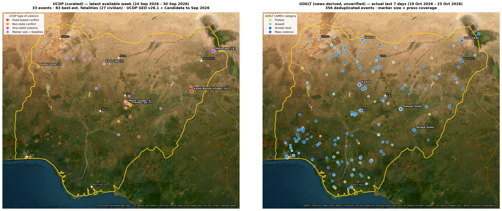

RBM GLOBAL · OPEN-SOURCE SECURITY AND HUMANITARIAN OVERVIEW
Nigeria - Weekly Threat Brief
Reporting window: 19 October 2026 to 25 October 2026. Issue date: 26 October 2026. Published: 26 October 2026. A selected, source-based review, not an exhaustive incident census. Source publication, event, reporting, issue and publication dates have different meanings.
AI-generated, source-checked overview. Automated review does not replace independent field verification.
Overview
This brief covers a reported community attack and a public-health development. The supplied evidence cannot support a nationwide security assessment or comparisons between zones.
Reviewed developments
Deadly attack reported in Taraba
Reported: Premium Times reported an attack on Binnari village, Taraba, citing Amnesty International's account of 40 deaths. It also described a lower initial police toll. These are differing accounts, not additive totals. The article was published on the window's closing day. [1]
Event window: 23 October 2026 to 23 October 2026. The attack occurred during the reporting week; publication followed on the closing day.
Ebola confirmation and contact follow-up
Reported: Channels Television attributed an Ebola laboratory confirmation in the Federal Capital Territory to NCDC. Its closing-day article reported 53 identified contacts under follow-up; contacts should not be read as confirmed infections. [2]
Event window: 20 October 2026 to 20 October 2026. Laboratory confirmation occurred during the reporting week; the later article also described contact follow-up.
Coverage and confidence
| Zone | Selected coverage and interpretation |
|---|---|
| North East | Coverage is localised; wider conditions across the zone remain unassessed. |
| North Central | The supplied material does not establish a zone-wide security picture. |
| North West | Insufficient supplied evidence for an in-week assessment. No separately verified development selected. This does not establish absence of incidents. |
| South East | Insufficient supplied evidence for an in-week assessment. No separately verified development selected. This does not establish absence of incidents. |
| South West | Insufficient supplied evidence for an in-week assessment. No separately verified development selected. This does not establish absence of incidents. |
| South South | The material is insufficient for a broader security or humanitarian assessment. |
Map and data status

UCDP: 2,291 curated conflict-event records in the complete captured map, dated 1 October 2024 to 30 September 2026. The image panel covers 24 September 2026 to 30 September 2026. UCDP is delayed and subject to revision; it is not a current-week census. This image panel differs from the brief reporting week.
GDELT: 1,652 machine-coded reporting records in the complete captured map, dated 23 September 2026 to 25 October 2026. The image panel covers 19 October 2026 to 25 October 2026. Daily input coverage is complete from 23 September 2026 through 25 October 2026; the maximum matching event date is 25 October 2026. These dates are not interchangeable.
GDELT reporting volume is not a verified incident count, casualty count or opinion poll. The UCDP and GDELT panels must not be added or treated as comparable trends.
Map snapshot generated 2026-10-26T17:29:41.273741Z. The captured map and its original windows are retained with this issue.
Humanitarian context
Displacement, assistance coverage and unmet needs cannot be quantified from this evidence.
Limitations
This bounded review provides no independent verification. Coverage gaps do not establish an absence of incidents, and isolated reports cannot establish persistent patterns.
Sources
- Premium Times | 25 October 2026: Death toll in Taraba terror attack rises to 40
- Channels Television | 25 October 2026: Ebola: 53 Contacts, Including Healthcare Workers Under Surveillance, Says NCDC